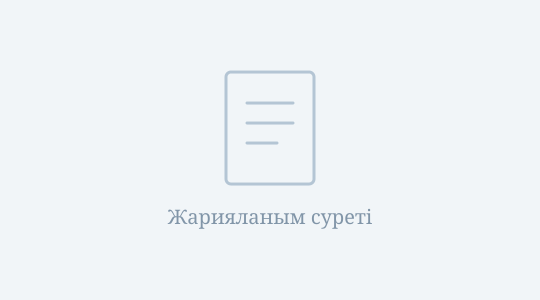

Nuerjibieke
Жеке ғылыми парақша
Оқу орны / ұйым кейін қосылады
Алдын ала қарау Жеке мәліметтер мен жарияланымдар кейін қосылады
Өзім туралы
Жеке ғылыми парақшама қош келдіңіз!
Мұнда білімім, қазіргі оқу немесе жұмыс орным және зерттеу сұрақтарым туралы қысқаша ақпарат беріледі. Өмірбаяным кейін қосылады.
Зерттеу бағыттары
- Негізгі зерттеу бағыты — кейін қосылады
- Зерттеу тақырыптары — кейін қосылады
Жаңалықтар
- [2026.10] Жеке ғылыми парақшаның алғашқы нұсқасы дайын.
Таңдаулы жарияланымдар
Төмендегі үлгілер кейін нақты ғылыми жарияланымдармен ауыстырылады.
-

Мақала 01Таңдаулы жарияланым атауы (кейін қосылады)Журнал / конференция және жыл · кейін қосылады -
Мақала 02Келесі таңдаулы жарияланым (кейін қосылады)Журнал / конференция және жыл · кейін қосылады
Білім
Университет / ұйым
Дәреже, мамандық және оқу мерзімі · кейін қосылады
Ғылыми және еңбек тәжірибесі
Ғылыми, еңбек және тағылымдама тәжірибесі кейін қосылады.
Minimal Light тақырыбы негізінде. Автор: Yaoyao Liu.